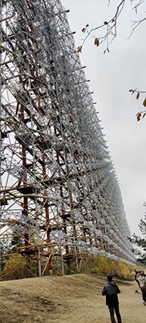

Kaikkiaan oli aivan mahtava reissu. 1 päivä ei oikein riittänyt ja jäi todella paljon alueesta näkemättä. Seuraavaksi ehkä sitten 3 tai 5 päivän retki.


Tsernobylin ydinvoimalaonnettomuudesta johtuen osa Ukrainasta on edelleen ja tulee olemaan mahdollisesti aina asuinkelvotonta aluetta.
Ydinvoimala-alue ja sen tuhoutunut reaktori 4 sijaitsee noin 18 km päässä itse Tsernobylin kaupungista.
Lähdimme aamulla 26.10 klo 7.00 Gamma Travelin matkassa Kiovassa sijaitsevalta Hotel Dnipro:lta pikkubussilla kohti Prypjatia.
2 tunnin ajomatka huonokuntoisia ja kuoppaisia teitä pitkin oli aika raskasta pikku krapulassa.
Raja-asemalle saavuttuamme passimme ja lippumme tarkistettiin ja saimme kauloihimme ripustettavat "medaljongit",
jotka mittasivat päivän aikana saadun säteilyn määrän.
Matkalla katsottiin pieniä pätkiä ihan kiinnostavia dokumentteja alueesta sekä oppaamme Johnny piti historia ja turvallisuus infon alueelta.
Laillisesti hylättyihin taloihin ei saisi mennä sisälle ja oppaamme sanoikin "If u hear bus honking, get the fuck out. military or police is on the way."
Kävimme muutamassa alueen kylässä sekä päiväkodissa, jotka olivat matkanvarrella Pripyatiin.
Päiväkoti oli vähän teatraalisen tuntuinen, sillä siellä oli lasten piirustuksia ja nukkeja ympäriinsä.
Pripyatin kaupunki on pahiten räjähdyksessä kärsinyt kaupunki, sillä se sijaitsee lähimmillään noin 2 kilometrin päässä räjähtäneestä reaktorista.
Se rakennettiin kodiksi ydinvoimalan työntekijöille sekä perheille ja täällä asui n. 50 000 henkilöä ennen onnettomuutta.
Oli todella siistiä kävellä pitkin hiljaista, luonnon valtaamaa kaupunkia ränsistyneiden asuintalojen, hotelleiden, kauppojen ja elokuvateatterin keskellä.
Kaupunki kierroksen jälkeen kävimme syömässä sotilasruokalassa, jonne päästiin vasta kun olimme käyneet säteilymittaus laitteessa tarkistamassa ettei meihin ole tarttunut säteilyä liikkuessamme alueella.


Kävimme myös alueella, joka on ollut aikoinaan salainen sotilasalue ja se näkyikin kartalla "kesämökki/virkistys alueena".
Alueelta löytyy 1/3 Neuvostoliiton tutkajärjestelmistä ns. "Russian woodpecker", jonka oli tarkoitus varoittaa mannertenvälisistä ohjuksista.
Sitä käytettiin myös USA:n vakoilemiseen eikä se tosiasiassa edes ikinä toiminut.
USA:n kysyessä tutkista Neuvostoliitto kertoi niiden olevan TV antenneja, koska heillä oli silloin 3 tv-kanavaa.

Tsernobylissä pyörähdettiin vain palomiesten muistomerkillä ajanpuutteen vuoksi. Siellä asuu tänäkin päivänä joitakin ihmisiä, jotka pitää huolta kaupungista ja ulkoalueista. "Kulku" koiria näkyi alueella paljon.
Paluu matkalla käytiin 3:n tarkistuspisteen läpi säteilyn varalta sekä lukemassa kaulassa killuvien medaljonkien lukemat. Kukaan meistä ei saanut säteilyä enempää kuin mitä saisimme lennolta esim Helsingistä Kiovaan. Erittäin turvallinen paikka oppaan johdolla.
Kaikkiaan oli aivan mahtava reissu. 1 päivä ei oikein riittänyt ja jäi todella paljon alueesta näkemättä. Seuraavaksi ehkä sitten 3 tai 5 päivän retki.